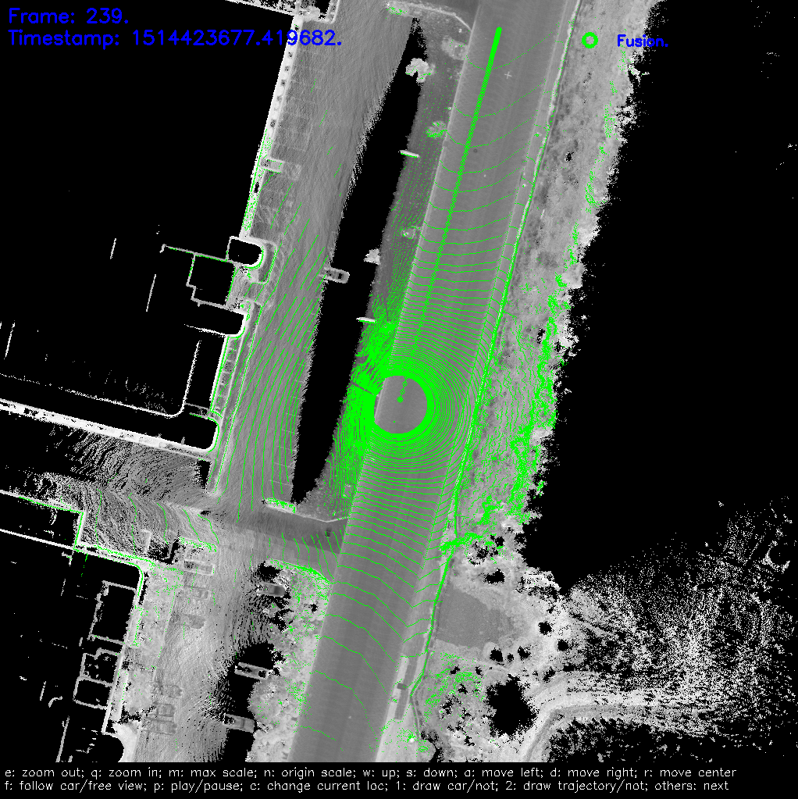

How to Run NDT Localization Module On Your Local Computer
1. Preparation
- Download source code of Apollo master branch from GitHub
- Follow the tutorial to set up docker environment and build Apollo.
- Download localization data from Apollo Data Open Platform（US only)
the localization data is a experimental dataset to verify the availability of localization. It contains localization map(ndt_map/), vehicle params(params/), sensor recording data(records/). The specific attributes are as follows:
duration: 5 mins
mileage: 3km
areas: city roads in Sunnyvale
weather: sunny day
2. Configuring Parameters
Assume that the path to download localization data from is DATA_PATH.
2.1. Configure Sensor Extrinsics
NDT localization module use the same params path as msf localization module.
cp DATA_PATH/params/ant_imu_leverarm.yaml /apollo/modules/localization/msf/params/gnss_params/
cp DATA_PATH/params/velodyne64_novatel_extrinsics_example.yaml /apollo/modules/localization/msf/params/velodyne_params/
cp DATA_PATH/params/velodyne64_height.yaml /apollo/modules/localization/msf/params/velodyne_params/
Add config of sensor extrinsics in /apollo/modules/localization/conf/localization.conf to overwrite the default value.
# The lidar extrinsics file
--lidar_extrinsics_file=/apollo/modules/localization/msf/params/velodyne_params/velodyne64_novatel_extrinsics_example.yaml
The meaning of each file - ant_imu_leverarm.yaml: Lever arm value - velodyne64_novatel_extrinsics_example.yaml: Transform from IMU coord to LiDAR coord - velodyne64_height.yaml: Height of the LiDAR relative to the ground
2.2. Configure Map Path
Add config of map path in /apollo/modules/localization/conf/localization.conf
# Redefine the map_dir in global_flagfile.txt
--map_dir=DATA_PATH
This will overwrite the default config defined in global_flagfile.txt
2.3 Configure Topic Name
For different LIDAR sensor, Apollo may has different LIDAR topic name. So set the right lidar topic name in /apollo/modules/localization/conf/localization.conf to overwrite the default value.
# The pointcloud topic name.
--lidar_topic=/apollo/sensor/velodyne64/compensator/PointCloud2
[optional] if you want to visualize localization result, you should also modify the LIDAR topic name in /apollo/modules/localization/dag/dag_streaming_msf_visualizer.dag
channel: /apollo/sensor/velodyne64/compensator/PointCloud2
3. Run the multi-sensor fusion localization module
run the script in apollo directory
./scripts/ndt_localization.sh
This script will run localization program in the background. You can check if the program is running by using the command.
ps -e | grep "ndt_localization"
In /apollo/data/log directory, you can see the localization log files.
- localization.INFO : INFO log
- localization.WARNING : WARNING log
- localization.ERROR : ERROR log
- localization.out : Redirect standard output
- localizaiton.flags : A backup of configuration file
4. Play record bag
cd DATA_PATH/bag
cyber_recorder play -f *.record
Open another ternimal and log in the docker environment, then execute:
cyber_monitor
It will display a topic list in which you can see topic /apollo/localization/pose
5. Record and Visualize localization result (optional)
Record localization result
python ./scripts/record_bag.py
Visualize Localization result
NDT localization module use the same visualization tools as MSF localization module.
./scripts/localization_online_visualizer.sh
First, the visualization tool will generate a series of cache files from the localization map, which will be stored in the apollo/data/map_visual directory.
Then it will receive the topics blew and draw them on screen. - /apollo/sensor/velodyne64/compensator/PointCloud2 - /apollo/localization/pose
If everything is fine, you should see this on screen.

6. Stop localization module
You can stop localizaiton module by
./scripts/ndt_localization.sh stop
If you record localization result in step 5, you will also need to end the recording process:
python ./scripts/record_bag.py stop
7. Verify the localization result (optional)
NDT localization module also use the same evaluation scripts as MSF localization module.
First, rename the recording file with suffix .record.
./scripts/msf_local_evaluation.sh OUTPUT_PATH ANT_IMU_PATH
OUTPUT_PATH is the folder stored recording bag in step 5, and ANT_IMU_PATH is the file stored lever arm value.
This script compares the localization results of NDT mode to RTK mode.
(Aware that this comparison makes sense only when the RTK mode runs well.)
And we can get the statistical results like this

It only has one statistical data which is the localization result. Other result as in MSF mode will not show.
The meaning of each row in the table - error： the plane error, unit is meter - error lon： the error in the car's heading direction, unit is meter - error lat： the error in the car's lateral direction, unit is meter - error roll： the roll angle error, unit is degree - error pit： the pitch angle error, unit is degree - error yaw： the yaw angle error, unit is degree
The meaning of each col in the table - mean： evaluation value of the error - std： the standard deviation of the error - max： the maximum value of the error - < xx： percentage of frames whose error is smaller than the indicated range - con_frame()： the maximum number of consecutive frames that satisfy the conditions in parentheses